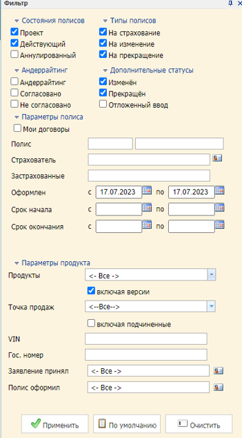

АИС «Страхование автотранспортных средств (с WEB-интерфейсом)» (Web-auto) - предназначена для оформления договоров страхования более чем по 30 продуктам страхования. Оформление договоров производится через WEB-интерфейс в точке продаж (агентство или филиал компании) при непосредственном взаимодействии с клиентом или же через API сервис партнерской интеграции (автодилеры).

В данном сервисе можно найти необходимый договор по номеру полиса, по VIN номеру, по ФИО страхователя и государственному номеру авто.
На изображении слева приведен пример
Кликните на изображение для его увеличения